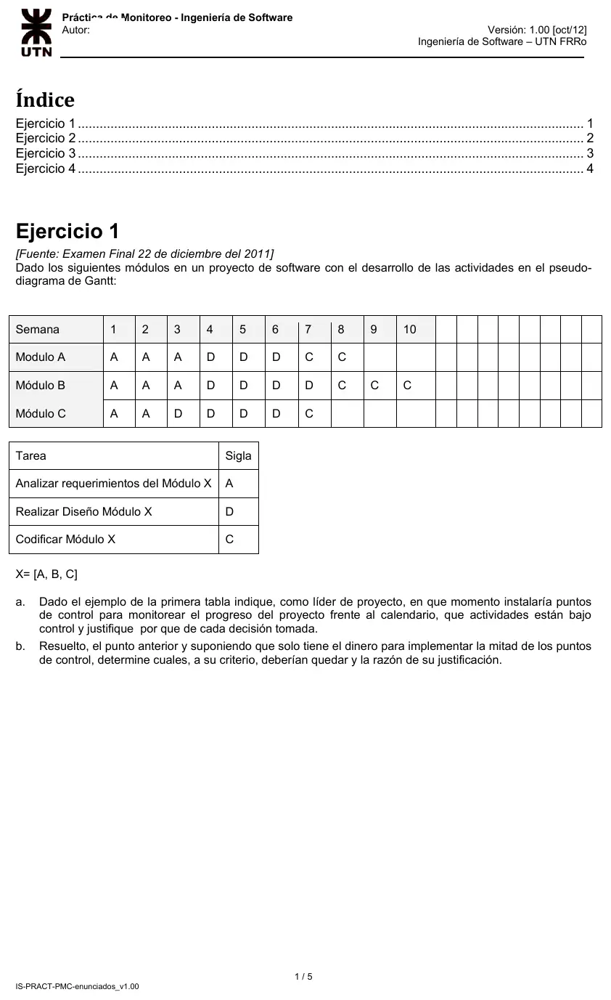
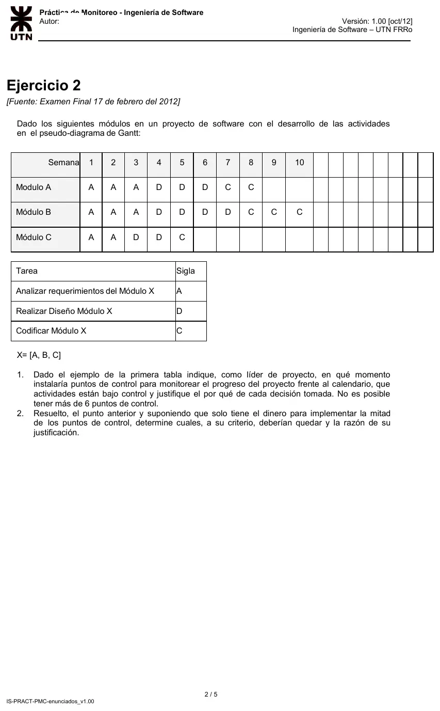
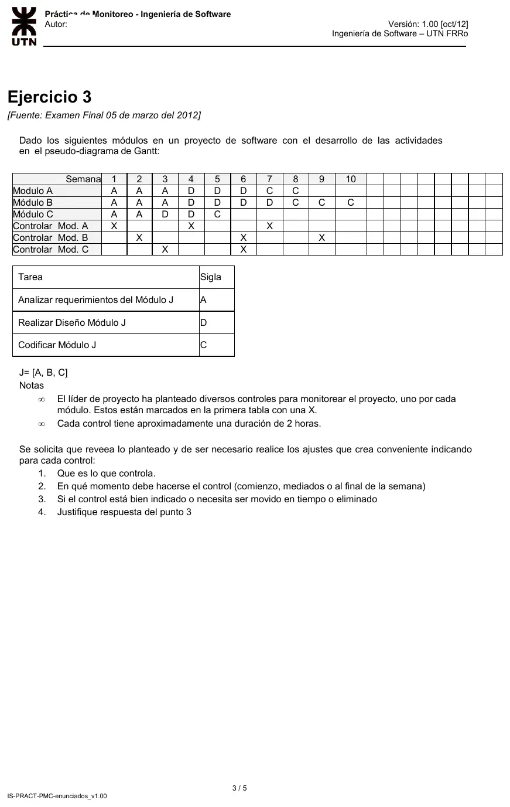
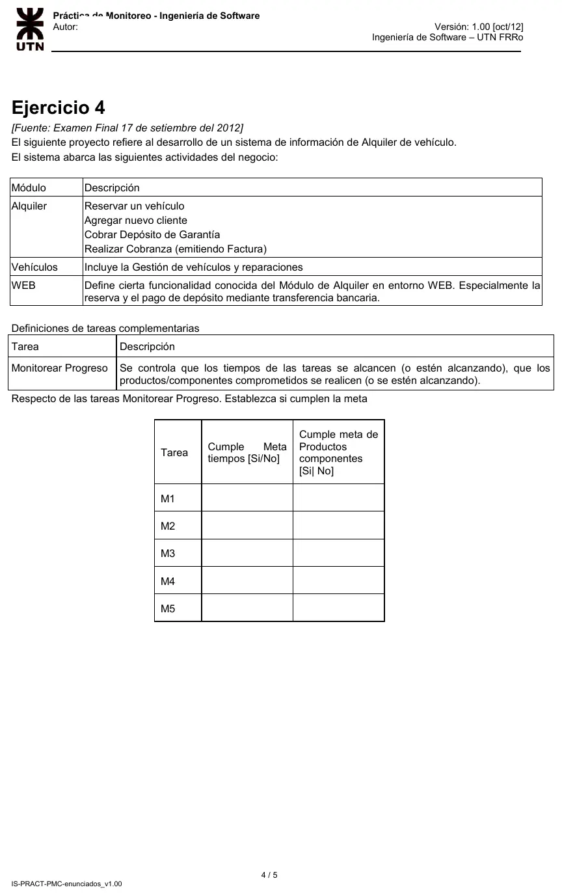
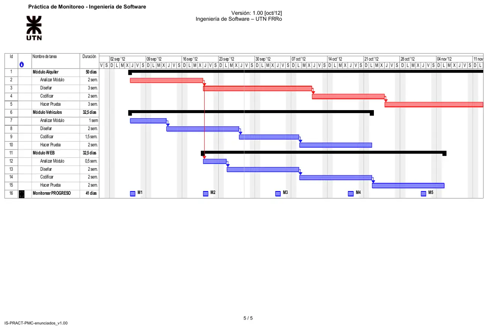

Práctica de la cátedra: monitoreo y control
Parcial de aprobación directa
Enunciado










Propuesta de respuesta
Respuesta no verificada. La propuso Luta Studios con inteligencia artificial y ningún docente la revisó. Puede tener errores.
El criterio es el de PMC. Se monitorea el avance contra el plan (SP 1.1) en revisiones de progreso y de hitos (SP 1.6 y 1.7), a tiempo para tomar acciones correctivas (SP 2.2). Cada actividad termina con un producto, el análisis, el diseño o el código, que es la entrada de la siguiente. Por eso el control va al terminar cada actividad, antes de que arranque la que la usa.
Ejercicio 1
| Módulo | Análisis | Diseño | Codificación | Termina |
|---|---|---|---|---|
| A | Semanas 1 a 3 | 4 a 6 | 7 y 8 | Semana 8, con 2 semanas de holgura |
| B | 1 a 3 | 4 a 7 | 8 a 10 | Semana 10, es el camino crítico |
| C | 1 y 2 | 3 a 6 | 7 | Semana 7, con 3 semanas de holgura |
a. Puntos de control.
| Punto | Momento | Qué controla |
|---|---|---|
| 1 | Fin de la semana 2 | Análisis de C, antes de su diseño |
| 2 | Fin de la semana 3 | Análisis de A y de B, antes de sus diseños |
| 3 | Fin de la semana 6 | Diseño de A y de C, antes de codificarlos |
| 4 | Fin de la semana 7 | Diseño de B y codificación de C, que cierra el módulo C |
| 5 | Fin de la semana 8 | Codificación de A, que cierra el módulo A |
| 6 | Fin de la semana 10 | Codificación de B, que cierra el proyecto |
Quedan bajo control las nueve actividades. Si se puede, conviene un punto más a mitad del diseño de B, al final de la semana 5, porque es la tarea más larga del camino crítico.
b. Con la mitad de los puntos. Quedan tres.
| Punto | Momento | Por qué queda |
|---|---|---|
| 2 | Fin de la semana 3 | Controla los análisis de A y B, y el de C ya terminado. El análisis es la entrada de todo el diseño |
| 4 | Fin de la semana 7 | Controla el diseño de B, que está en el camino crítico. El diseño de A, terminado en la semana 6, y el módulo C se revisan en el mismo punto |
| 5 | Fin de la semana 8 | Controla la codificación de A y el avance de la de B, con dos semanas para reaccionar |
Salen el 1, porque C tiene holgura, el 3, porque el 4 llega una semana después, y el 6, porque al final del proyecto ya no hay tiempo para corregir nada.
Ejercicio 2
| Módulo | Análisis | Diseño | Codificación | Termina |
|---|---|---|---|---|
| A | Semanas 1 a 3 | 4 a 6 | 7 y 8 | Semana 8, con 2 semanas de holgura |
| B | 1 a 3 | 4 a 7 | 8 a 10 | Semana 10, es el camino crítico |
| C | 1 y 2 | 3 y 4 | 5 | Semana 5, con 5 semanas de holgura |
1. Puntos de control, hasta 6. Las actividades terminan en 8 semanas distintas, así que hay que juntar. Se juntan los de C, que tiene la holgura más grande, y se cuida a B.
| Punto | Momento | Qué controla |
|---|---|---|
| 1 | Fin de la semana 3 | Análisis de A, B y C. El de C terminó en la semana 2, y se acepta una semana de demora porque C tiene holgura |
| 2 | Fin de la semana 5 | Diseño y codificación de C, que cierra el módulo |
| 3 | Fin de la semana 6 | Diseño de A, antes de codificarlo |
| 4 | Fin de la semana 7 | Diseño de B, antes de codificarlo |
| 5 | Fin de la semana 8 | Codificación de A, que cierra el módulo |
| 6 | Fin de la semana 9 | Avance de la codificación de B, con una semana para reaccionar antes del cierre |
2. Con la mitad de los puntos. Quedan el 1, el 4 y el 6. El 1 controla los tres análisis juntos. El 4 controla el diseño de B, en el camino crítico, y ya pasaron el diseño de A y todo C. El 6 controla el cierre de A y el avance de B a tiempo para corregir.
Ejercicio 3
El Gantt es el del ejercicio 2. Cada control dura unas 2 horas, así que entra en cualquier momento de la semana. Lo que importa es que haya un producto terminado para revisar.
| Control | Semana planteada | Qué controlaría | ¿Está bien? | Ajuste y momento | Por qué |
|---|---|---|---|---|---|
| Mod. A | 1 | El análisis de A recién empezado | No | Moverlo al final de la semana 8 | En la semana 1 no hay producto. Así se controla la codificación de A, que no tenía control |
| Mod. A | 4 | El análisis de A, terminado en la semana 3 | Sí | Comienzo de la semana 4 | Revisa el análisis antes de que avance el diseño |
| Mod. A | 7 | El diseño de A, terminado en la semana 6 | Sí | Comienzo de la semana 7 | Revisa el diseño antes de codificar |
| Mod. B | 2 | El análisis de B a mitad de camino | No | Moverlo al comienzo de la semana 4 | El análisis termina en la semana 3. Se hace junto con el de A |
| Mod. B | 6 | El diseño de B, con 3 de sus 4 semanas | No | Moverlo al comienzo de la semana 8 | El diseño termina en la semana 7 |
| Mod. B | 9 | El avance de la codificación de B | Sí | Mediados de la semana 9 | B es el camino crítico y termina con el proyecto. Un control de avance deja tiempo para reaccionar |
| Mod. C | 3 | El análisis de C, terminado en la semana 2 | Sí | Comienzo de la semana 3 | Revisa el análisis antes del diseño |
| Mod. C | 6 | La codificación de C, terminada en la semana 5 | Sí | Comienzo de la semana 6 | Revisa también el diseño de C, que no tiene control propio. C tiene 5 semanas de holgura |
Ejercicio 4
Cada hito de Monitorear PROGRESO está a 2 semanas, 10 días laborales, del anterior. Las 41 jornadas van de M1 a M5 inclusive. Contando en días laborales desde el inicio:
| Módulo | Análisis | Diseño | Codificación | Prueba |
|---|---|---|---|---|
| Alquiler | 0 a 10 | 10 a 25 | 25 a 35 | 35 a 50 |
| Vehículos | 0 a 5 | 5 a 15 | 15 a 22,5 | 22,5 a 32,5 |
| WEB, después del análisis de Alquiler | 10 a 12,5 | 12,5 a 22,5 | 22,5 a 32,5 | 32,5 a 42,5 |
| Hito | Día | En curso | Terminado desde el hito anterior | Meta de tiempos | Meta de productos |
|---|---|---|---|---|---|
| M1 | 0 | Recién arrancan los análisis de Alquiler y Vehículos | Nada | No | No |
| M2 | 10 | Diseño de Vehículos. Arranca WEB | Análisis de Alquiler, justo en el hito, y de Vehículos | Sí | Sí |
| M3 | 20 | Diseño de Alquiler, codificación de Vehículos y diseño de WEB | Diseño de Vehículos y análisis de WEB | Sí | Sí |
| M4 | 30 | Codificación de Alquiler, prueba de Vehículos y codificación de WEB | Diseño de Alquiler, codificación de Vehículos y diseño de WEB | Sí | Sí |
| M5 | 40 | Prueba de Alquiler y de WEB | Codificación de Alquiler y de WEB, y el módulo Vehículos completo | Sí | Sí |
M1 está en el inicio. No pasó tiempo ni hay productos, así que no hay avance para comparar contra el plan. Además, M5 es el último hito, pero Alquiler sigue hasta el día 50 y WEB hasta el 42,5. El cierre de la prueba de los dos módulos queda sin monitorear. Convendría pasar M1 al final, como M6 en el día 50, o agregar ese hito.
Respuesta no verificada. Puede tener errores.
Se armó con la página Aprobación directa, sección Áreas para relacionar, en PMC, y Del alcance al cronograma de Regularización.
Quedó en duda: Los puntos de control y cuáles quedan con la mitad dependen del criterio, y hay otras elecciones defendibles. En el ejercicio 4, M1 no cumple las metas por estar en el inicio, y el cierre en el día 50 queda sin hito. Las dos lecturas son propias.
¿Cómo te fue?
Marcá cada tema del examen.
- PMCMetas y prácticas genéricas, en Regularización